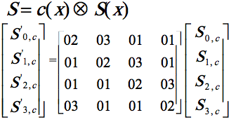
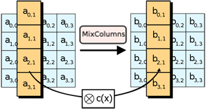

Se trata de la transformación siguiente a ShiftRow. Durante el proceso de MixColumns, los cuatro bytes de cada columna del state se combinan usando una transformación lineal que es inversible (para poder realizar luego el descifrado). La función MixColumns toma como entrada cuatro bytes y devuelve otros cuatro. Cabe destacar que cualquier cambio en los bytes de entrada, influiría en el resto de las salidas de 4 bytes.
MixColumns junto con ShiftRows proporcionan la fase de difusión del cifrado AES.
Veamos como funciona en detalle el proceso de MixColumns:
MixColumns opera columna por columna de la matriz, tomando a cada una como un polinomio de grado tres. Es decir, que las columnas son consideradas como polinomios en el campo GF(28) (Campo de Galois) y cada una es multiplicada módulo x4+1 con un polinomio fijo c(x), dado por:
c(x)= {03}x3 + {01}x² + {01}x + {02}
Puede verse mejor en esta imagen:

Esta matriz fue elejida cuidadosamente, apoyándose en la teoría de códigos de corrección de errores.
